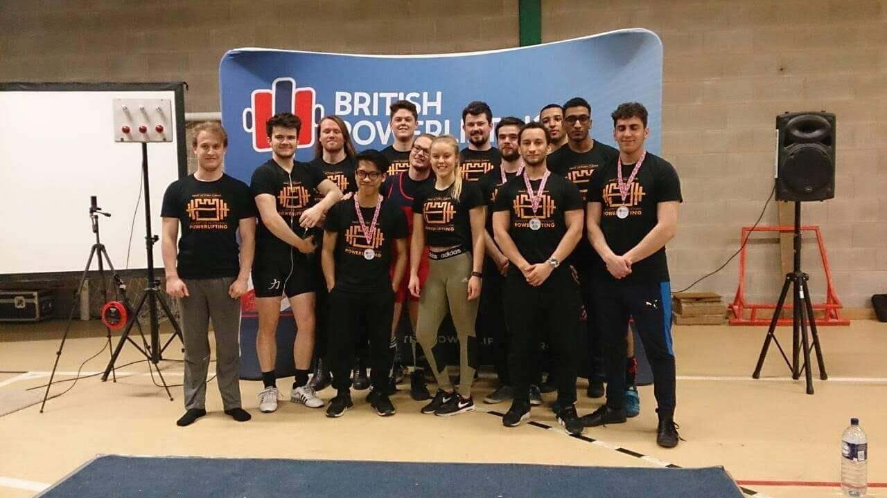

About me
Aside from physics and maths, my interests include music, sports, philosophy, travelling and literature. I especially enjoy playing piano works by Chopin, Liszt, Rachmaninoff, Debussy and Scriabin.
I'm interested in phenomenological and existential philosophy, from Brentano and Husserl to Sartre and Camus. Slightly closer to my academic work, I enjoy reading and discussing the philosophy of science, particularly questions about space-time, General Relativity and quantum gravity. I organise a philosophy and space-time reading group at UCL.
I've also competed in powerlifting. As part of the University of Nottingham team, we placed fourth at the IPF World University Powerlifting Cup in 2018.

Contact
For research enquiries, collaborations or seminar invitations, you can contact me at jenskoerik@gmail.com.